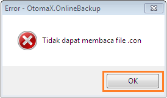
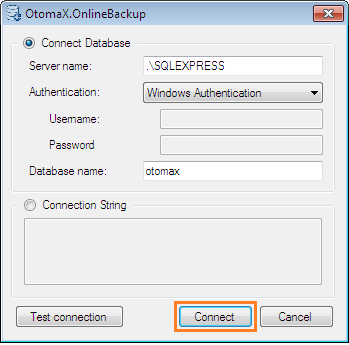
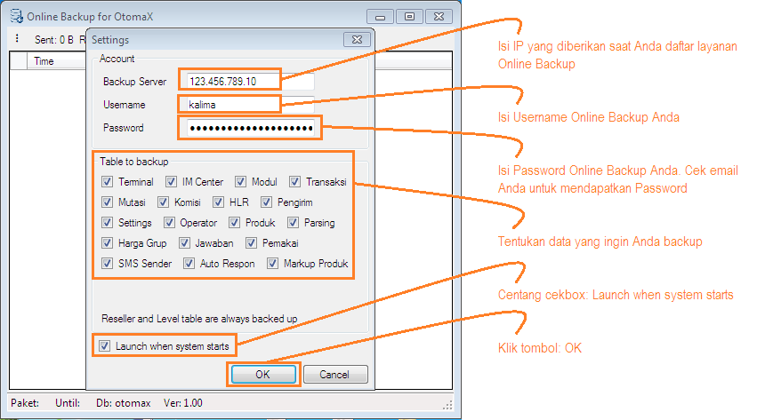
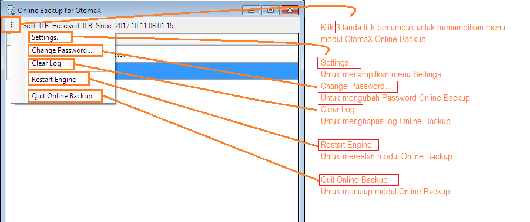

Setting Online Backup
Setelah Anda mendaftar layanan Online Backup langkah selanjutnya ialah mensettingnya. Kalau Anda belum tahu apa itu Online Backup silahkan klik disini terlebih dahulu. Berikut ini langkah - langkah setting Online Backup:
- Pastikan Anda telah mendaftar layanan Online Backup dan memiliki akun Online Backup misalnya seperti ini OB SUKSES: 123.456.789.10/kalima/kalima@gmail.com. 123.456.789.10 ini nanti dimasukkan di box: Backup Server pada modul. Apabila Anda belum memilikinya silahkan daftar dahulu, untuk daftar klik disini.
- Download modul OtomaX Online Backup, klik disini.
- Extract modul yang baru didownload, kemudian copy paste file hasil extract ke folder tempat instalasi software OtomaX.
-
Pilih modul OnlineBackup -> klik kanan -> klik Run as Administrator -> klik Yes. Akan muncul tampilan seperti di bawah ini dan klik OK.
.
Akan muncul tampilan seperti di bawah ini dan klik Connect.

-
Selanjutnya akan muncul menu Settings seperti di bawah ini, lakukan sesuai petunjuk di gambar:

- Selesai.
PERHATIAN: Khusus pengguna OtomaX versi di bawah 3.7.8 sebelum mensetting modul Online Backup lakukan update OtomaX ke versi 3.7.8 atau lebih tinggi terlebih dahulu klik disini, kemudian downgrade ke versi yang diinginkan.
Sebagai informasi, pada modul OtomaX Online Backup terdapat beberapa menu, diantaranya: Settings, Change Password dan lain - lain yang dapat Anda gunakan ketika membutuhkannya, perhatikan gambar di bawah ini:

Adapun untuk tata cara download dan restore data dari layanan Online Backup silahkan klik disini.
FAQ
| No. | Pesan | Petunjuk |
| 1 | Server: Invalid login | Username atau password Online Backup yang Anda masukkan salah, cek kembali |
| 2 | Server: Maaf, password anda adalah p4ssword. Mohon segera diganti | Ganti password Online Backup Anda |
| 3 | Server: OutOfMemoryException: Exception of type 'System.OutOfMemoryException' was thrown | Abaikan |
| 4 | Gateway Timeout | OB Sedang gangguan, tunggu normal; atau koneksi internet anda tidak stabil |
| 5 | Internal Server Error | OB Sedang gangguan, tunggu normal; atau koneksi internet anda tidak stabil |
| 6 | Network Error (tcp_error), A communication error occurred: "Connection reset by peer", The Web Server may be down, too busy, or experiencing other problems preventing it from responding to requests. You may wish to try again at a later time, For assistance, contact your network support team | OB Sedang gangguan, tunggu normal; atau koneksi internet anda tidak stabil |
| 7 | WebException: Unable to connect to the remote server | OB Sedang gangguan, tunggu normal; atau koneksi internet anda tidak stabil |
| 8 | WebException: The underlying connection was closed: An unexpected error occurred on a receive | OB Sedang gangguan, tunggu normal; atau koneksi internet anda tidak stabil |
| 9 | WebException: The underlying connection was closed: The connection was closed unexpectedly | OB Sedang gangguan, tunggu normal; atau koneksi internet anda tidak stabil |
| 10 | Server: DbException: There are more columns in the INSERT statement than values specified in the V clause. The number of values in the V clause must match the number of columns specified in the INSERT statement | Restart OB |
| 11 | Server: ArgumentOutOfRangeException: capacity was less than the current size | Update ke OB versi terbaru |
| 12 | Server: NullReferenceException: Object reference not set to an instance of an object | Abaikan, tunggu 1, 2, 3 jam atau lebih nanti akan normal sendiri; atau update ke OB versi terbaru |
| 13 | Server: OverflowException: Arithmetic operation resulted in a overflow | Update ke OB versi terbaru |
| 14 | Your subsription is expired | Masa aktif layanan Online Backup telah habis, lakukan pembayaran iuran |
| 15 | Tidak dapat mengakses database. Format of initialization string does not conform to specification starting at index 0 | Tutup modul Online Backup -> Hapus file OnlineBackup.con |
| 16 | Connect failed. Delete the .con file if needed. Format of initialization string does not conform to specification starting at index 0 | Tutup modul Online Backup -> Hapus file OnlineBackup.con |
| 17 | Your subscription is going to be expired | Masa aktif layanan Online Backup akan habis, lakukan pembayaran iuran |
| 18 | Server: InvalidDataException: The magic number in GZip header is not correct. Make sure you are passing in a GZip stream | Abaikan |
| 19 | markupProduk a. : Invalid object name 'markup_produk'. SET NOCOUNT ON SELECT GETDATE() SELECT kode_reseller,kode_produk,markup,tgl_data FROM markup_produk WITH(NOLOCK) | Abaikan |
| 20 | Server: Invalid column name 'apk_grup' | Abaikan |
| 21 | Server: OverflowException: Array dimensions exceeded supported range | Abaikan |
| 22 | Server: DbException: String or binary data would be truncated | Abaikan |
| 23 | FormatException: Index (zero based) must be greater than or equal to zero and less than the size of the argument list | Abaikan |
| 24 | Server: Invalid session | Cek koneksi internet, restart modem internet atau ganti koneksi internet |
| 25 | Server: Please update this application to version 3.01 or later | Update aplikasi Online Backup dengan versi terbaru |
| 26 | Komisi table has more than 2 million rows. We cannot process it until you delete some rows | Hapus data komisi yang telah ditukar |
| 27 | Connect failed. Delete the .con file if needed. Error: A network-related or instance-specific error occured while establishing a connection to SQL Server. The server was not found or was not accessible. Verifty that the instance name is correct and that SQL Server is configured to allow remote connections. (provider: SQL Network Interfaces, error: 26 - Error Locating Server/Instance Specified) | Tutup modul Online Backup -> Hapus file OnlineBackup.con dan pastikan database dalam kondisi normal |
| 28 | Server: expired: 2019-02-10 18:01:10 | Masa aktif layanan Online Backup telah habis, lakukan pembayaran iuran |
| 29 | WARNING: Data lokal Anda mungkin lebih tua dibandingkan dengan server. Jika Anda melanjutkan data di server akan DIRESET seperti awal. Klik OK untuk melanjutkan. | Klik OK |
| 30 | WebException: The operation has timed out | OB Sedang gangguan, tunggu normal; atau koneksi internet anda tidak stabil. |